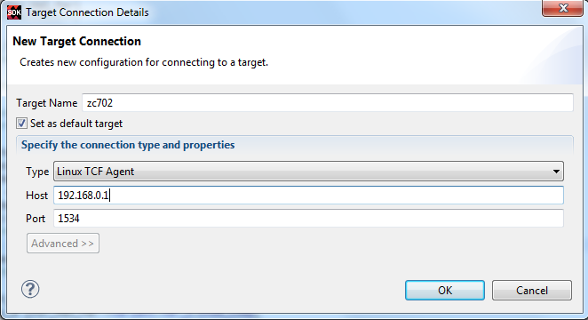

To profile Linux applications using Xilinx System Debugger, perform the following:
-
Create an new Linux application for the target, using the Xilinx SDK.
Note: The instructions have been developed based on Cortex-A9 on ZC702 but should be valid for other targets as well.
-
Import your application sources in to the new project.
-
Build the application.
-
Boot Linux on ZC702 (for example, from the SD card) and start the TCF agent on the target.
-
Create a new target connection for the TCF agent, from the Target Connections view.

-
Create a new Xilinx System Debugger debug configuration for the application, you wish to profile, and launch the debug configuration.
-
On the Target Setup tab page, select Linux Application Debug from the Debug Type list.
-
On the Application tab page, specify the local .elf file path and the remote .elf file path.
-
Click Debug.
-
When the process context stops at main(), launch the TCF Profiler view by selecting .
-
In the TCF Profiler view, click the Start toolbar icon to start profiling.
Note: Set a breakpoint at the end of your application code, so that the process is not terminated. If not set, the data collected by the TCF Profiler is lost when the process terminates.
-
Resume the process context. TCF Profiler view will be updated with the profile date.